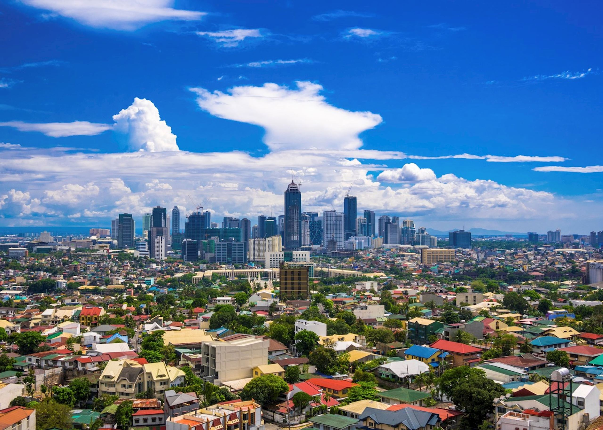
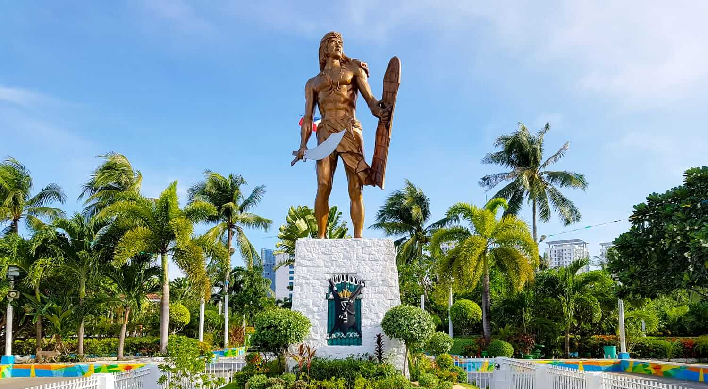
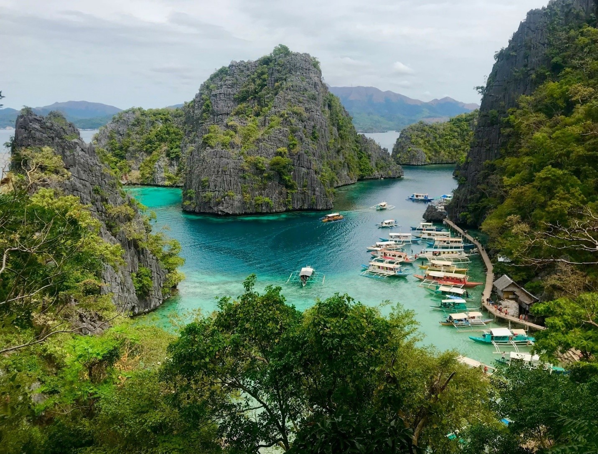
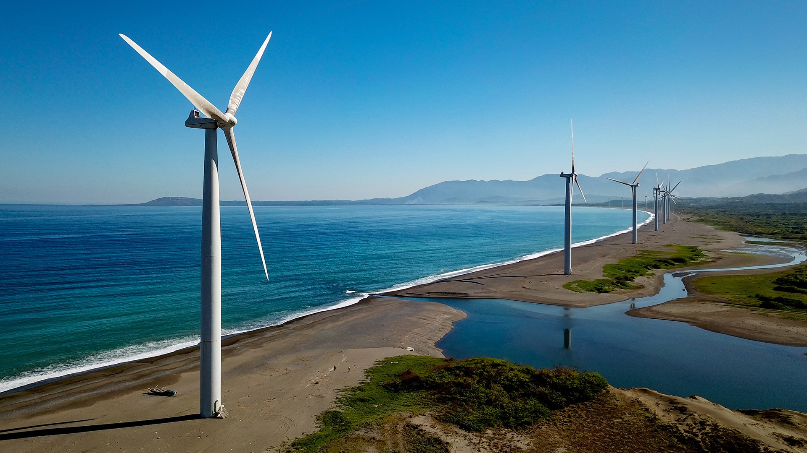

Itinerary for Manila
- Day 1: Explore Intramuros and Fort Santiago
- Day 2: Visit National Museum and Rizal Park
- Day 3: Shopping and dining at Bonifacio High Street

Itinerary for Bohol
- Day 1: Visit Chocolate Hills and Tarsier Sanctuary
- Day 2: Explore Panglao Island and Hinagdanan Cave
- Day 3: Relax at Alona Beach and dine at Loboc River Cruise

Itinerary for Boracay
- Day 1: Lounge at White Beach
- Day 2: Island hopping to Puka Shell Beach and Ariel's Point
- Day 3: Enjoy sunset at Diniwid Beach and dinner at D'Mall

Itinerary for Cebu
- Day 1: Visit Magellan's Cross and Basilica del Santo Niño
- Day 2: Explore Kawasan Falls and Oslob's whale shark watching
- Day 3: Island hopping to Malapascua and Bantayan Islands

Itinerary for Palawan
- Day 1: Discover Puerto Princesa Underground River
- Day 2: Island hopping to El Nido's lagoons and beaches
- Day 3: Snorkeling at Coron's shipwrecks and hot spring baths

Itinerary for Ilocos
- Day 1: Explore Vigan's heritage sites and Calle Crisologo
- Day 2: Sandboarding at Paoay Sand Dunes and visit Cape Bojeador Lighthouse
- Day 3: Swim at Pagudpud's Blue Lagoon and windmills sightseeing